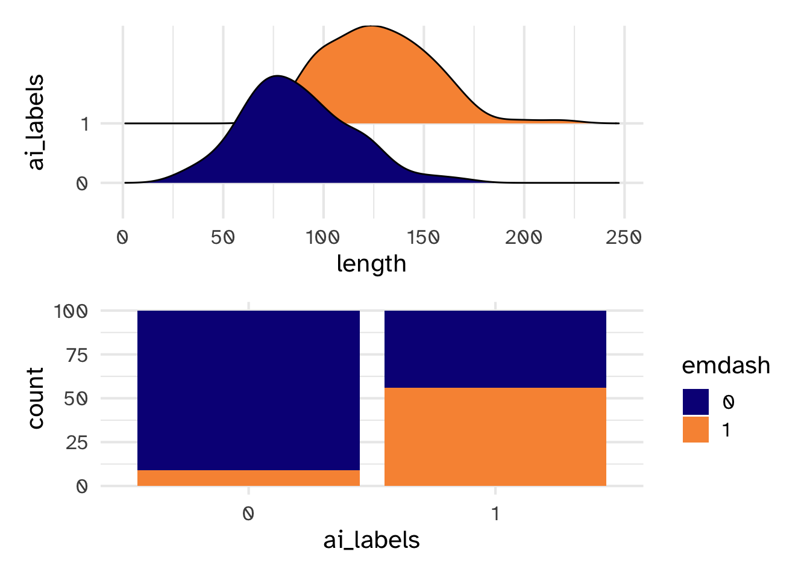
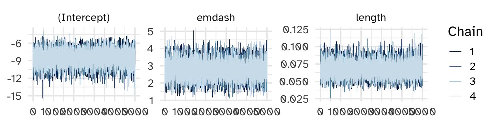
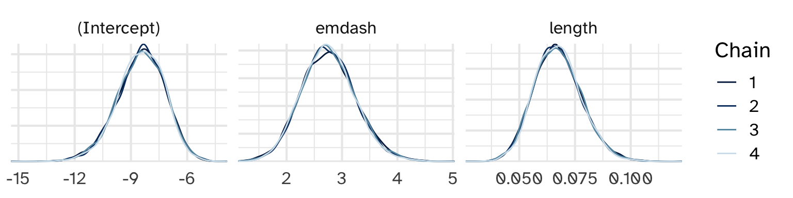
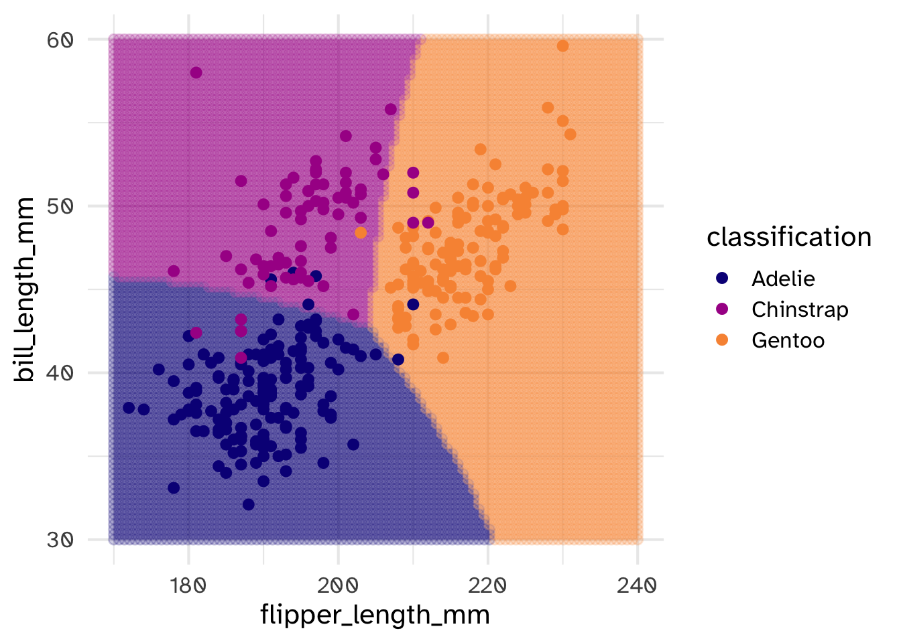

Day 22
Carleton College
Stat 340 - Fall 2025
# A tibble: 6 × 3
ai_labels emdash length
<dbl> <int> <dbl>
1 0 0 91.3
2 0 0 109.
3 1 0 140.
4 0 0 66.1
5 1 1 96.6
6 1 0 198. 
Fake data alert!


[1] 20000 200 1 2 3 4 5 6 7 8 9 10
[1,] 0 0 1 0 0 1 0 0 0 0
[2,] 0 0 0 0 0 1 0 0 0 0
[3,] 0 0 1 0 0 1 0 0 0 0
[4,] 0 0 0 0 0 1 0 0 0 0
[5,] 0 0 1 0 0 1 0 0 0 0
[6,] 0 0 1 0 0 1 0 0 1 0
[7,] 0 0 1 0 0 0 0 0 1 0
[8,] 0 0 0 0 0 0 0 0 0 0
[9,] 0 0 1 0 0 0 0 0 0 0
[10,] 0 0 1 0 0 1 0 0 0 0# A tibble: 6 × 5
ai_labels emdash length ai_prob ai_class
<dbl> <int> <dbl> <dbl> <dbl>
1 0 0 57.0 0.0128 0
2 0 0 95.3 0.120 0
3 0 0 121. 0.418 0
4 0 0 58.8 0.0126 0
5 0 0 64.5 0.0186 0
6 0 0 149. 0.812 1Classification Accuracy
Proportion of all \(Y\) observations that are accurately classified
Sensitivity (true positive rate)
Proportion of all \(Y=1\) observations that are accurately classified
Specificity (true negative rate)
Proportion of all \(Y=0\) observations that are accurately classified
\[Y = \begin{cases} \text{Adelie} \\ \text{Chinstrap} \\ \text{Gentoo} \end{cases}\]
using
\[X_1 = \begin{cases} 1 & \text{if above avg weight (>4200g)} \\ 0 & \text{otherwise} \end{cases}\]
species n percent
Adelie 152 0.4418605
Chinstrap 68 0.1976744
Gentoo 124 0.3604651We’ll use this as our prior probability model
species based on above_average_weight species 0 1
Adelie 0.83443709 (126) 0.1655629 (25)
Chinstrap 0.89705882 (61) 0.1029412 (7)
Gentoo 0.04878049 (6) 0.9512195 (117)Practice
If we come across a below average weight penguin (\(X_1 = 0\)), what is the likelihood of each species?
Practice
Verify the following posterior model for \(Y\) given \(X_1 = 0\)
| Y | A | C | G | Total |
|---|---|---|---|---|
| P(Y|X1=0) | 0.654 | 0.315 | 0.031 | 1 |
Practice
If we observe a penguin with a 50mm bill:
\[X_2 | (Y=A) \sim N(\mu_A, \sigma_A^2)\]
\[X_2 | (Y=C) \sim N(\mu_C, \sigma_C^2)\]
\[X_2 | (Y=G) \sim N(\mu_G, \sigma_G^2)\]
Our prior understanding was that the penguin was most likely an Adelie. But the data (a 50mm bill length) is most consistent with Chinstraps. The posterior model balances these 2 conflicting pieces of evidence:
| Y | A | C | G | Total |
|---|---|---|---|---|
| P(Y) | ||||
| L(Y|X2=50) | ||||
| P(Y|X2=50) | 0.0002 | 0.3972 | 0.6026 | 1 |
Check-in
If we only had bill_length_mm, which species would we have trouble distinguishing? What if we only had flipper_length_mm?
\[f(x_2, x_3 | y) = f(x_2 | y) f(x_3 |y)\]
\[L(Y|X_2, X_3) =\]
[1] 9.654647e-07[1] 0.006204155[1] 1.801748e-05| Y | A | C | G | Total |
|---|---|---|---|---|
| P(Y) | ||||
| L(Y|X2=50, X3=195) | ||||
| P(Y|X2=50, X3=195) | 0.0003 | 0.9944 | 0.0052 | 1 |
naiveBayes() in {e1071}
Naive Bayes Classifier for Discrete Predictors
Call:
naiveBayes.default(x = X, y = Y, laplace = laplace)
A-priori probabilities:
Y
Adelie Chinstrap Gentoo
0.4418605 0.1976744 0.3604651
Conditional probabilities:
bill_length_mm
Y [,1] [,2]
Adelie 38.79139 2.663405
Chinstrap 48.83382 3.339256
Gentoo 47.50488 3.081857
flipper_length_mm
Y [,1] [,2]
Adelie 189.9536 6.539457
Chinstrap 195.8235 7.131894
Gentoo 217.1870 6.484976 Adelie Chinstrap Gentoo
[1,] 0.0003445688 0.9948681 0.004787365[1] Chinstrap
Levels: Adelie Chinstrap Gentoo species Adelie Chinstrap Gentoo
Adelie 96.05% (146) 2.63% (4) 1.32% (2)
Chinstrap 7.35% (5) 86.76% (59) 5.88% (4)
Gentoo 0.81% (1) 0.81% (1) 98.39% (122)# A tibble: 6 × 3
bill_length_mm flipper_length_mm classification
<dbl> <dbl> <fct>
1 30 170 Adelie
2 30 171. Adelie
3 30 171. Adelie
4 30 172. Adelie
5 30 173. Adelie
6 30 174. Adelie 